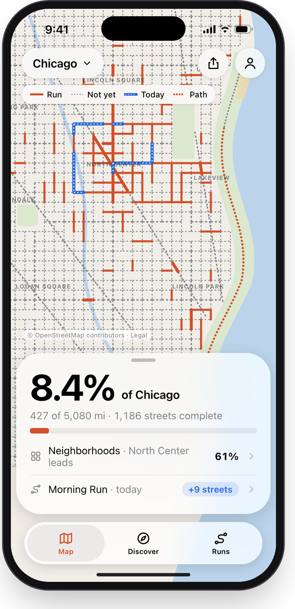
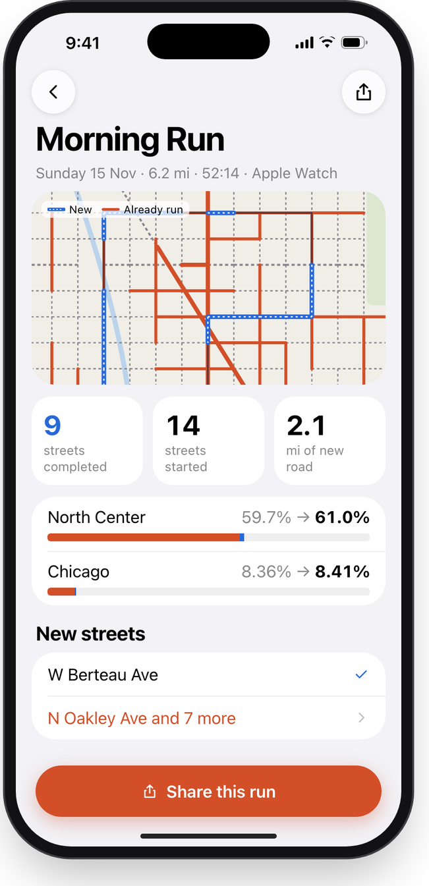
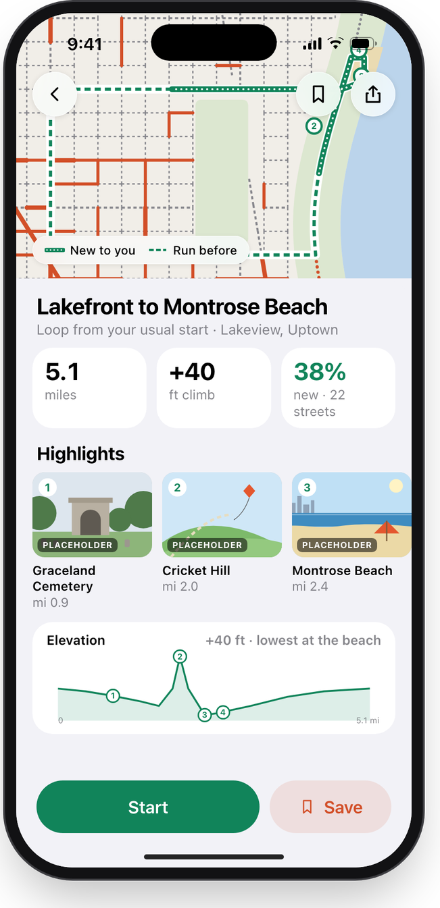
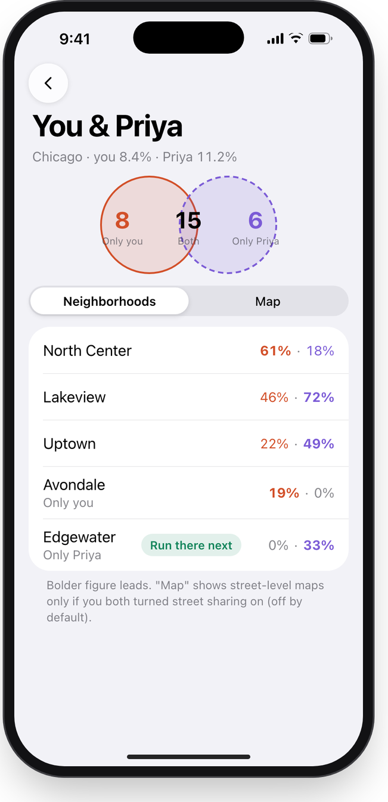

Every street you've run.
And the ones you haven't.
StreetFill turns the runs already in Apple Health into a map of your city, then plans runs that take you somewhere new.
We're launching one city at a time. Telling us yours helps decide where we go next. We'll email you about the beta and launch, nothing else.

Your history is already a map. You just haven't seen it.
If you run with an Apple Watch or an app that saves your route to Apple Health, StreetFill can show you every street you've covered the first time you open it.
Connect Apple Health
StreetFill reads your workouts and their routes. Nothing else.
See your city fill in
Years of runs become a street-by-street map, with your percentage for the city and every neighborhood.
Keep running as usual
Record with your Watch or your usual app. After each run StreetFill tells you which streets were new.
Streets that count because you actually ran them
Other street-completion apps track you live in the background, and runners say they miss streets. StreetFill matches the route your workout already recorded, so a street you ran is a street you get.
- Completion for your city and each neighborhood
- "9 new streets" summary after every run
- Share cards for "I've run 61% of my neighborhood"

Runs that take you somewhere new
Pick a distance, flat or hilly, and what you'd like to see. StreetFill plans three loops built around streets you've never run, and shows you the beach, park or landmark you'll pass before you go.
- Choose how much of the run is new to you
- Flat to hilly, waterfront, parks, landmarks, quiet streets
- Photo previews and an elevation profile for every route
- Follow it in the app or send it to your watch as a GPX file

| Typical route generator | StreetFill | |
|---|---|---|
| Distance, loop, flat or hilly | Yes | Yes |
| Knows which streets you've already run | No | Yes |
| Shows what you'll pass along the way | Rarely | Yes |
| Counts the new streets when you get home | No | Yes |
Race your friends to new neighborhoods
See the neighborhoods only you have run, only they have run, and the ones you share. A friends-only leaderboard ranks who explored the most this week, and "Run there next" plans a route into their territory.
- Friends see neighborhood percentages, never your routes
- Invite by link or QR code. No public profiles.
- Free, always

Your routes never leave your phone
StreetFill does the matching on your iPhone against a downloaded street map of your city. There's no account to use the map, and no server that sees where you run.
On-device matching
Workouts and routes are read from Apple Health and processed on your iPhone. They aren't uploaded.
A zone around home
If you add friends later, streets around your home are removed on the phone before anything is shared.
No ads, no data sales
Health data is never used for advertising or sold. Delete everything from Settings at any time.
FAQ
When can I use it?
StreetFill is in development. Beta testers in our first city get a TestFlight invite before launch; everyone on the list hears when it's on the App Store.
Do I need an Apple Watch?
No, but your runs need to be in Apple Health with a route. An Apple Watch does that automatically. Many running apps also save routes to Health; we're checking which ones during the beta.
Does it work on Android?
Not at first. StreetFill is built for iPhone and Apple Health.
Which cities?
We're starting with one city and adding more based on where people sign up. Put your city in the form above.
Do trails and park paths count?
Yes. Paths and trails have their own progress, and Discover routes can use them, so lakefront and beach paths are in. Your street percentage stays streets only.
How much will it cost?
Your map, your city and neighborhood percentages, post-run summaries, sharing and friends are free. A paid plan adds unlimited Discover runs and more cities. Pricing will be announced before launch.
Help us test StreetFill
We're looking for runners who record with an Apple Watch or a running app and want to see their city fill in.
We'll only email you about the beta and launch.